DGR：面向错位鲁棒的虚拟染色——论文深度解读
论文：Generative AI for Misalignment-Resistant Virtual Staining to Accelerate Histopathology Workflows 作者：Jiabo Ma†, Wenqiang Li†, Jinbang Li, Ziyi Liu, Linshan Wu, Fengtao Zhou, Li Liang, Ronald Cheong Kin Chan, Terence T. W. Wong, Hao Chen*（香港科技大学、南方医科大学南方医院、香港中文大学等） 发表：arXiv:2509.14119v1 [cs.CV]，2025-09-17 代码：<https://github.com/birkhoffkiki/DTR> 方法名：DGR（Decoupled Generation and Registration，生成与配准解耦）
0. 先澄清一个命名问题
很多人在读这篇论文时会把方法名记混（比如记成 "Mac" 或 "MUSTARD"）。这里先明确：
本文提出的框架叫 DGR，全称 Decoupled Generation and Registration（生成与配准解耦）。它不是 Mac，也不是 MUSTARD。
DGR 由两个模块组成：
| 模块 | 缩写 | 作用 |
|---|---|---|
| 用于降噪的配准 | RNR（Registration for Noise Reduction） | 用配准网络 $R_1$ 把生成图像对齐到"含噪"真值，让重建损失可信 |
| 位置一致性生成 | PcG（Position-consistency Generation） | 用配准网络 $R_2$ 强制"生成图像 = 输入的逐像素风格翻译"，把生成与配准解耦 |
有意思的是，代码仓库名字叫DTR，论文里叫DGR，注意别被绕晕。
1. 背景：虚拟染色是什么，为什么值得做
组织病理学诊断的黄金标准是看片子。但一张片子往往不够——诊断常常需要同一样本的多张不同染色切片：
- H\&E（苏木精-伊红）：区分细胞核与细胞外基质，最通用的染色；
- PAS / PAS-AB（过碘酸-雪夫 / 阿尔新蓝）：特异性靶向糖蛋白，肾脏病理常用；
- mIHC（多重免疫组化）：在同一张切片上同时可视化多种蛋白标志物（如 DAPI 标细胞核、panCK 标肿瘤区、CD3 标 T 细胞）。
问题在于，化学染色这套流程代价很高：
- 耗时耗力：每加一种染色，就要多一轮染色—扫描；
- 耗组织：连续切片（serial sectioning）会消耗掉宝贵的组织样本，而同一张切片又无法在不损伤、不丢失信息的前提下反复染色；
- 不环保：大量化学试剂对环境有负担。
虚拟染色（virtual staining） 就是冲着这三条来的：把一张无标记图像或某一种染色图像，用算法直接转换成另一种染色图像。它快、省组织、几乎不产生化学废物。
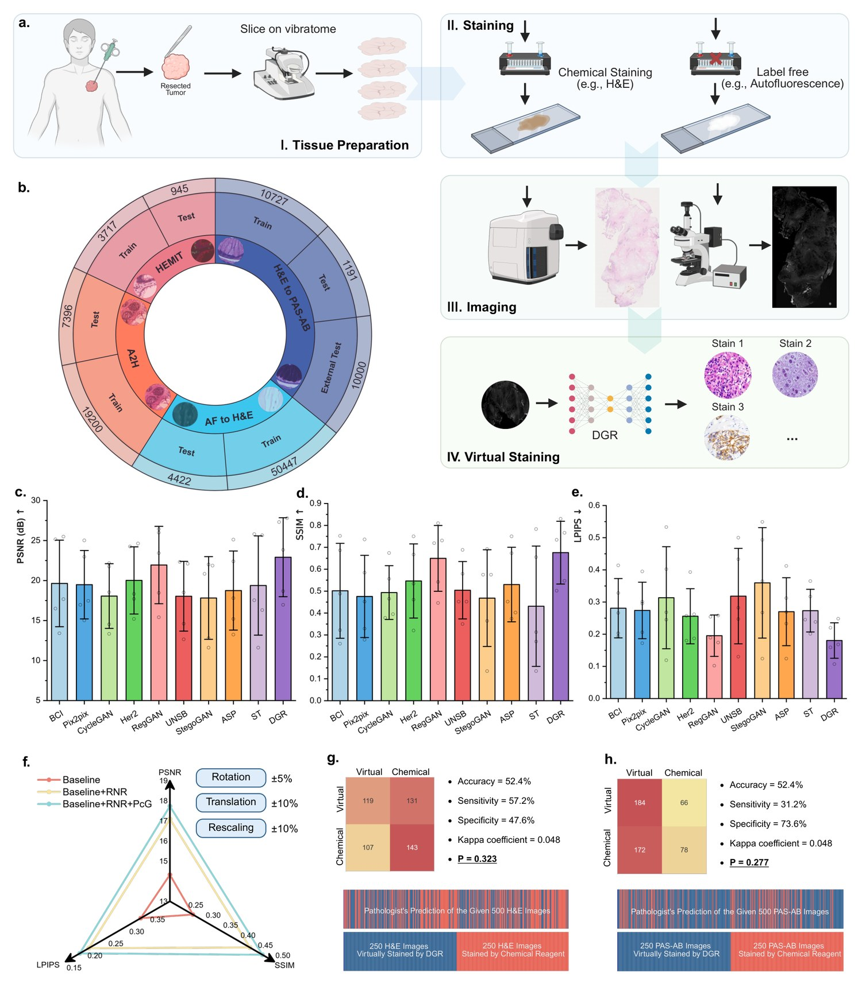
图 1：虚拟染色总览。a 为完整工作流（组织制备 → 染色 → 成像 → 虚拟染色）；b 为本文使用的五个数据集；c-e 为各方法在五个测试集上的平均性能；f 为严重人工错位下不同 DGR 模块的鲁棒性对比；g-h 为病理医师的盲法鉴别评估。
2. 前人工作，以及它们共同的"阿喀琉斯之踵"
虚拟染色这条线上，前人工作大致可以分成四派，每一派都被同一个问题卡住。
2.1 监督派：Pix2Pix —— 前提是"完美对齐"
Isola 等（Pix2Pix）的思路最直接：训练一个生成器 $G$，用像素级 $L_1$ 损失逼着 $G(x)$ 逼近目标 $y$。这类方法在虚拟染色中被大量使用。
它的死穴：$L_1$ 损失是逐像素比较的。一旦输入 $x$ 与目标 $y$ 之间存在哪怕几个像素的错位，损失就会"惩罚正确的内容"——生成器学到的不是"该怎么染色"，而是"该怎么把图像挪一挪去凑对齐"。所以 Pix2Pix 的性能严重依赖配对图像的对齐程度。
2.2 非配对派：CycleGAN —— 不要求配对，但保不住内容
Zhu 等的 Cycle-GAN 用循环一致性（cycle-consistency）训练两个生成器，不需要配对数据，因此在非配对场景下通常比 Pix2Pix 表现更好。
它的死穴：循环一致性约束本质上是让模型更关注图像风格（style）而不是内容（content）。结果就是可能把内容丢掉甚至编造——对虚拟染色这种"必须忠实还原细胞结构"的任务来说，这是致命的。
2.3 抗错位派：Pyramid Pix2Pix / BCI —— 缓解，但不解决
Liu 等（后文表格中的 BCI）提出多尺度（pyramid）损失，通过在不同尺度上计算损失来增强对结构错位的鲁棒性。这是"抗错位"思路的第一次尝试，但它只是让损失对错位没那么敏感，并没有显式地把错位"消掉"。
2.4 配准派：RegGAN —— 引入了配准，却留下了耦合
Kong 等提出的 RegGAN 引入了"损失校正（loss correction）"思想：加一个配准网络 $R$，估计生成图像 $G(x)$ 与含噪真值 $y$ 之间的形变场 $\phi$，先用 $\phi$ 把 $G(x)$ 扭曲（warp）到对齐，再计算损失。这比 Pyramid Pix2Pix 又进了一步。
但它的漏洞恰恰是本文的切入点：RegGAN 只保证了「配准之后的生成图像 $\phi \circ G(x)$ 与 $y$ 对齐」，没有显式保证「生成图像本身 $G(x)$ 与理想真值 $\hat{y}$ 对齐」。由于 $\hat{y}$ 与输入 $x$ 是对齐的，这就等价于：没有任何约束保证 $G(x)$ 与 $x$ 对齐。
后果很严重——生成器学会了"把结构错位藏进自己的输出里"，反正后面有 $R$ 会去纠正它。生成与配准因此紧耦合（tightly coupled），必须小心翼翼地平衡调参才能work。
2.5 一句话总结"为什么现有方法都不行"
错位本来是"数据采集"带来的问题，但前人都把它当成"生成模型"的问题在治。 而这个问题的根源是绕不开的：化学染色过程本身就会让组织发生形变，加上"一张切片不能反复染色"的物理限制，现实中根本拿不到严格像素级对齐的配对数据——能拿到的只有 non-paired（非配对） 或 roughly paired（粗略配对） 数据。
3. 这篇文章要解决的核心问题
在只有"粗略配对"数据的前提下，训练出像素级准确、且对错位鲁棒的虚拟染色模型；并且这个框架要能"即插即用"地装到现有虚拟染色模型上，不改动它们原本的网络结构。
最终结果：在五个数据集上显著优于 SOTA，内部数据集平均提升 3.2%，外部数据集平均提升 10.1%；在严重错位数据上 PSNR 提升 23.8%。
4. 方法：DGR 的完整推导（本文最核心的部分）
4.0 问题设定与符号
先把记号定清楚，后面所有公式都基于这套符号：
| 符号 | 含义 |
|---|---|
| $x_n$ | 第 $n$ 个输入图像（源模态，如自发荧光 AF、H\&E） |
| $y_n$ | $x_n$ 对应的"含噪"真值，即化学染色的粗略配对图像（与 $x_n$ 存在空间错位） |
| $\hat{y}_n$ | 与 $x_n$ 严格对齐的理想真值（现实不可得，仅用于理论分析） |
| $N$ | 配对样本总数 |
| $G$ | 生成器（虚拟染色网络） |
| $R_1, R_2$ | 两个配准网络 |
| $\circ$ | 重采样算子（按形变场对图像做网格采样/warping） |
目标：用错位数据集 $\{(x_1,y_1),\dots,(x_N,y_N)\}$ 训练模型，达到与用对齐数据集 $\{(x_1,\hat{y}_1),\dots,(x_N,\hat{y}_N)\}$ 训练相当的性能。
4.1 基线：Pix2Pix 的 $L_1$ 损失（式 1）
$$\min_G \; L(x,y) = \frac{1}{N}\sum_{n=1}^{N} \bigl\|\, G(x_n) - y_n \,\bigr\|_1 \tag{1}$$
怎么理解这个式子的脆弱性？ 假设 $y_n$ 相对 $x_n$ 平移了 $\delta$ 个像素。那么 $G$ 想最小化 $\|G(x_n)-y_n\|_1$，最"省事"的办法就是让输出也跟着平移 $\delta$——于是生成器学会的不是"染色"，而是"复制错位"。这就是错位会毁掉像素级监督的根本原因。
4.2 RegGAN 的 loss correction（式 2、式 3）——以及它的漏洞
RegGAN 引入配准网络 $R$，先估计形变场，再 warp 之后再算损失：
$$\phi_n = R\bigl(G(x_n),\, y_n\bigr) \tag{2}$$
$$\min_{G,R} \; L(x,y) = \frac{1}{N}\sum_{n=1}^{N} \bigl\|\, \phi_n \circ G(x_n) - y_n \,\bigr\|_1 \tag{3}$$
RegGAN 的假设是"含噪真值 = 理想真值的位移误差"，即 $y = \phi \circ \hat{y}$。
关键观察（本文的"发现问题"时刻）：式 3 只保证
$\phi \circ G(x) \approx y \quad\text{（配准后的生成图像 ≈ 含噪真值）}$
却完全没有保证
$G(x) \approx \hat{y} \quad\text{（生成图像本身 ≈ 理想真值）}$
而 $\hat{y}$ 是与 $x$ 对齐的，所以「$G(x)$ 与 $\hat{y}$ 错位」等价于「$G(x)$ 与输入 $x$ 错位」。
直觉比喻：RegGAN 请了一个"事后修图师" $R$ 来纠正 $G$ 的错位，但没有告诉 $G$ "你不许动像素位置"。于是 $G$ 干脆摆烂——我随便挪，反正有人帮我挪回来。
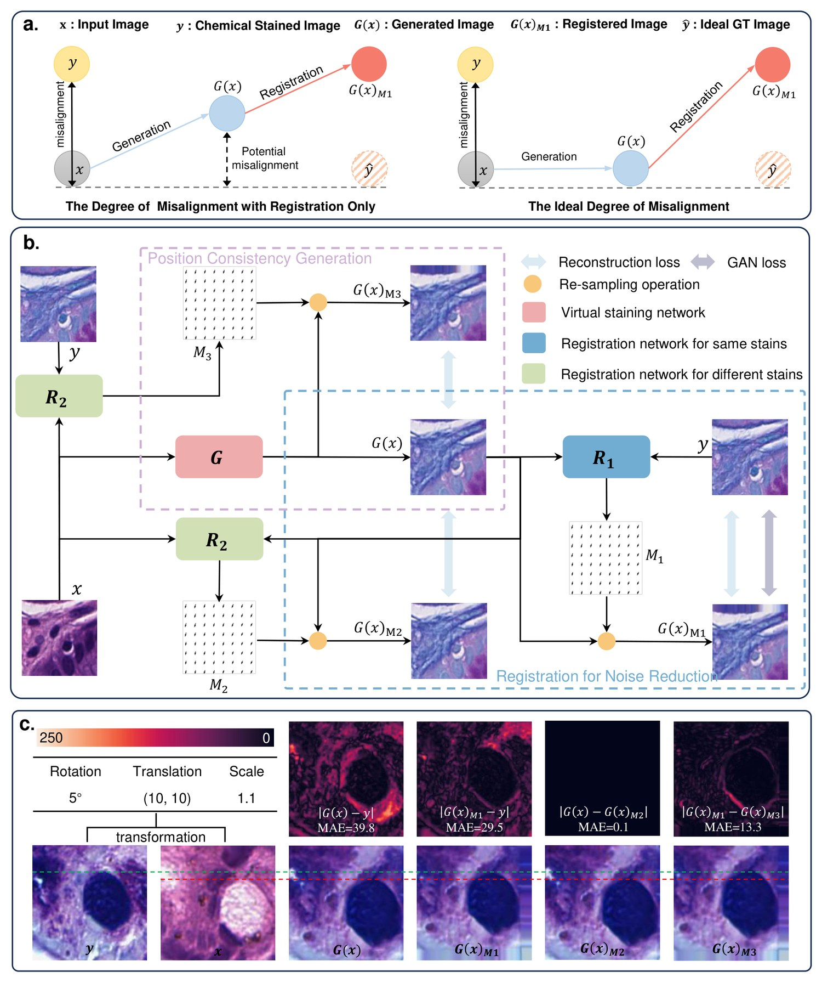
图 A1：DGR 的架构与可视化。a 用一张示意图对比了"只有配准"与"理想情况"下的错位程度差异；b 是 DGR 的完整框架（蓝色虚线框 = RNR 模块，紫色虚线框 = PcG 模块）；c 是解耦效果的可视化与误差图。
图 A1a 左边画的就是这个病灶：只靠配准，$G(x)$ 会滑到一个"既不在 $x$ 也不在 $\hat{y}$"的中间态（图中标注的 Potential misalignment）；右边是理想情况——$G(x)$ 老老实实落在 $x$ 正上方，只改外观、不改位置。
4.3 DGR 的核心：把生成与配准解耦
本文的结论是：生成与配准本质上是相互依赖的，因为校正损失只作用在 $\phi \circ G(x)$ 上，$G(x)$ 自身没有强约束。所以两者必须小心平衡才能达到最优——这很脆弱。
受 GAN 的启发，作者引入一个对抗式配准过程，把两者彻底解耦。下面拆开讲两个模块。
(A) RNR：用于降噪的配准（Registration for Noise Reduction）
第一步，用一个配准网络 $R_1$ 把 $G(x)$ 对齐到"含噪"真值 $y$，让重建损失变得可信。
① 校正后的 $L_1$ 重建损失（式 4）
$$L_{L1}(x,y) = \frac{1}{N}\sum_{n=1}^{N} \bigl\|\, R_1\bigl(G(x_n), y_n\bigr) \circ G(x_n) - y_n \,\bigr\|_1 \tag{4}$$
- $R_1(G(x_n), y_n)$：输入是「生成图像，含噪真值」这一对，输出是二者之间的形变场 $M_1$；
- $\circ$：按 $M_1$ 对 $G(x_n)$ 做重采样（warp）；
- 含义：先把生成图像 warp 对齐，再算 $L_1$，这样损失就不会因为错位而惩罚正确内容。
② 结构相似性损失（式 5）
为了提升结构层面的相似度，再加入 SSIM 项：
$$L_{ssim}(x,y) = -\,\frac{1}{N}\sum_{n=1}^{N} \log\Bigl(1 + \mathrm{ssim}\bigl(R_1(G(x_n), y_n) \circ G(x_n),\; y_n\bigr)\Bigr) \tag{5}$$
- $\mathrm{ssim}(\cdot,\cdot)$ 值域约 $[-1,1]$，越大越相似；
- 加 1 再取对数是为了保证对数内为正；
- 前面加负号，把"最大化结构相似性"变成"最小化损失"。
③ 形变场平滑正则（式 6）
$$L_{smooth}(x,y) = \frac{1}{N}\sum_{n=1}^{N} \bigl\|\, \nabla R_1\bigl(G(x_n), y_n\bigr) \,\bigr\|_2 \tag{6}$$
- $\nabla$ 是空间梯度算子，$\|\cdot\|_2$ 是 $L_2$ 范数；
- 作用是惩罚剧烈、非物理的形变，防止形变场过拟合出乱七八糟的位移。
④ 对抗损失（式 7、式 8）
为了让生成图像足够逼真，还要上 GAN：
$$L_{adv}(x) = -\,\frac{1}{N}\sum_{n=1}^{N} \log\bigl(D(G(x_n))\bigr) \tag{7}$$
$$L_{dis}(x,y) = -\,\frac{1}{N}\sum_{n=1}^{N} \Bigl[\log\bigl(1 - D(G(x_n))\bigr) + \log\bigl(D(y_n)\bigr)\Bigr] \tag{8}$$
- $D$ 是判别器，$D(\cdot)$ 表示"判为真实化学染色图像"的概率；
- 式 7 是生成器损失（骗过判别器）；式 8 是判别器的非饱和损失。
⑤ RNR 总损失（式 9）
$$L_{RNR}(x,y) = \alpha\, L_{L1}(x,y) + \beta\, L_{ssim}(x,y) + \gamma\, L_{smooth}(x,y) + \delta\, L_{adv}(x) \tag{9}$$
权重取值（论文表 A2）：$\alpha=10$，$\beta=0.5$，$\gamma=10$，$\delta=0.1$。
RNR 解决了什么：让「$G(x)$ 与 $y$」的错位不再污染损失——但它没有解决「$G(x)$ 与 $x$」的错位。这正是 PcG 要补上的洞。
(B) PcG：位置一致性生成（Position-consistency Generation）
先讲清楚"为什么生成器不许动像素"这个论证，这是全文最漂亮的一段逻辑：
输入图像 $x$（如自发荧光）与目标染色 $y$（如 H\&E）取自完全同一张物理组织切片。它们天然成对，共享完全相同的底层生物结构，主要差别在于视觉外观（模态），而非几何形状。 因此，一个正确生成的图像 $G(x)$ 必须是输入 $x$ 到目标染色风格的逐像素翻译。 所以——$G(x)$ 与 $x$ 之间的任何空间错位，都不是数据的属性，而是"训练不到位的生成器"带来的伪影。 目标是强制这种空间一致性，让生成器只改染色外观，不扭曲图像——类似于加一个不会让图像变形的颜色滤镜。
这个论证很关键：它把"生成器不得移动像素"从一句直觉，变成了一个可以写成损失函数的显式归纳偏置。
① 恒等性约束（式 10）——用来优化 $R_2$
$$L_{T1}(x) = \frac{1}{N}\sum_{n=1}^{N} \bigl\|\, R_2\bigl(x_n, G(x_n)\bigr) \circ G(x_n) - G(x_n) \,\bigr\|_1 \tag{10}$$
- $R_2$ 是同模态（same-stain）配准网络，输入是「输入 $x$，生成图像 $G(x)$」，输出形变场 $M_2$；
- 这个式子的含义是：用 $M_2$ 把 $G(x)$ warp 之后，还应该等于 $G(x)$ 自己——也就是说 $M_2$ 应该近似恒等映射；
- 反推逻辑：如果 $R_2$ 在 $(x, G(x))$ 这对图像上算出来的形变场是恒等映射，那说明 $G(x)$ 和 $x$ 本来就已经对齐了。
② 但恒等约束有个致命漏洞
如果只有式 10，$R_2$ 会"偷懒"：对任何输入对都输出恒等形变场，损失就恒为 0，于是什么也学不到。必须再加一个约束，逼 $R_2$ 去预测真实形变场。
③ 跨模态一致性约束（式 11）——堵上漏洞
推理链条是：既然式 10 保证了 $G(x)$ 与 $x$ 对齐，那么「$x$ 到 $y$ 的形变场」应当与「$G(x)$ 到 $y$ 的形变场」是同一个形变场。把这个性质写下来就是：
$$L_{T2}(x,y) = \frac{1}{N}\sum_{n=1}^{N} \bigl\|\, R_2(x_n, y_n) \circ G(x_n) - R_1\bigl(G(x_n), y_n\bigr) \circ G(x_n) \,\bigr\|_1 \tag{11}$$
- $R_2(x_n, y_n)$：跨模态（输入—目标）形变场 $M_3$；
- $R_1(G(x_n), y_n)$：生成图像—含噪真值形变场 $M_1$；
- 含义：两条配准路径 warp 出来的结果应该一致。这就迫使 $R_2$ 真的去学"如何对齐跨模态图像"，而不能靠输出恒等蒙混过关。
至此，$R_1$ 和 $R_2$ 形成了一个对抗关系：$G$ 想让 $R_2$ 认为自己已经对齐了（输出恒等），$R_2$ 则要努力找出真实的形变。
④ 两个平滑正则（式 12、式 13）
$$L_{T1R}(x) = \frac{1}{N}\sum_{n=1}^{N} \bigl\|\, \nabla R_2\bigl(x_n, G(x_n)\bigr) \,\bigr\|_2 \tag{12}$$
$$L_{T2R}(x,y) = \frac{1}{N}\sum_{n=1}^{N} \bigl\|\, \nabla R_2\bigl(x_n, y_n\bigr) \,\bigr\|_2 \tag{13}$$
式 12 约束同模态形变场 $M_2$ 平滑，式 13 约束跨模态形变场 $M_3$ 平滑——和式 6 是一个道理。
(C) 训练策略：两个对抗过程（式 14、式 15）
整个框架包含四个网络：生成器 $G$、判别器 $D$、配准网络 $R_1$ 与 $R_2$。训练被拆成两个对抗过程：
第一步：更新 $G$ 和 $R_1$
$$\min_{G,\,R_1} L(x,y) = L_{RNR}(x,y) + \epsilon\, L_{T1}(x) \tag{14}$$
- $\epsilon = 5$（表 A2）；
- $L_{RNR}$ 提供"配准校正后的重建 / 结构 / 对抗"监督；
- $\epsilon L_{T1}$ 把「生成图像与输入图像位置一致」的信号回传给生成器 $G$——这一步是解耦的关键。
第二步：更新 $R_2$
$$\min_{R_2} L(x,y) = L_{T1}(x) + \gamma\, L_{T1R}(x) + L_{T2}(x,y) + \gamma\, L_{T2R}(x,y) \tag{15}$$
- 只更新 $R_2$，同时用上恒等性约束（式 10）、跨模态一致性（式 11）和两个平滑约束（式 12、13）；
- 目的就是防止 $R_2$ 偷懒——如果它总输出恒等，$L_{T2}$ 会把它拉回来。
第三步：更新判别器 $D$，用式 8。
为什么要这样拆？ 如果 $G$ 和 $R_2$ 一起更新，两者会"串通"（$G$ 不动，$R_2$ 也输出恒等，双方损失都为零）。拆成两步交替优化，就构成了真正的对抗，$G$ 必须真的对齐才能让 $R_2$ 满意。
4.4 解耦效果的可视化验证
作者刻意在配对数据中人为引入错位，然后把各个误差图可视化出来（图 A1c）：
| 误差图 | MAE | 说明 |
|---|---|---|
| $\lvert G(x)-y \rvert$ | 39.8 | 未配准时，生成图像与含噪真值错位严重 |
| $\lvert G(x)_{M_1}-y \rvert$ | 29.5 | 用 $R_1$ 的形变场 $M_1$ warp 后误差下降 → $R_1$ 有效 |
| $\lvert G(x)-G(x)_{M_2} \rvert$ | 0.1 | $R_2$ 在 $(x,G(x))$ 上输出的 $M_2$ 几乎是恒等映射 → $G(x)$ 与 $x$ 已对齐（符合设计目标） |
| $\lvert G(x)_{M_1}-G(x)_{M_3} \rvert$ | 13.3 | 跨模态两条路径的差异，说明 $R_2$ 的跨模态配准仍有提升空间 |
其中 $G(x)_{M_1}$、$G(x)_{M_2}$、$G(x)_{M_3}$ 分别表示用形变场 $M_1$（由 $R_1$ 在 $G(x)$ 与 $y$ 上估计）、$M_2$（由 $R_2$ 在 $x$ 与 $G(x)$ 上估计）、$M_3$（由 $R_2$ 在 $x$ 与 $y$ 上估计）对 $G(x)$ 重采样得到的图像。
$M_2$ 那个 0.1 的 MAE 特别有说服力：它直接证明了生成器没有把错位藏进输出。
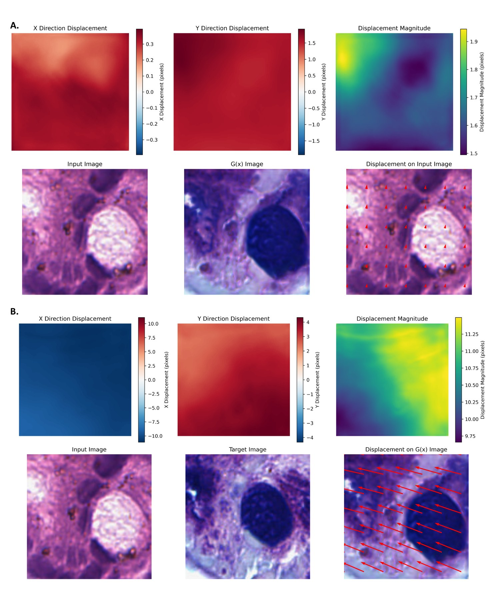
图 A3：DGR 学到的形变场可视化。a 为输入 H\&E 与生成图像 $G(x)$ 之间的形变场（强对齐说明 $G(x)$ 是对输入的忠实变换）；b 为 $G(x)$ 与目标真值之间的形变场（由 $R_1$ 产生，说明 $R_1$ 的配准机制有效）。
5.2 实验类型一：SOTA 横向对比（跨任务性能对比实验）
实验设计：与 9 个方法对比——Pix2Pix（监督）、CycleGAN（非配对）、BCI/Pyramid Pix2Pix（抗错位）、RegGAN（配准）等，覆盖四类技术路线。
总体结果（五个数据集平均，图 1c-e）：
| 指标 | DGR | 相对提升 |
|---|---|---|
| PSNR ↑ | 22.914 dB | +4.4% |
| SSIM ↑ | 0.676 | +4.0% |
| LPIPS ↓ | 0.180 | +7.7% |
分任务结果：
| 任务 | DGR 表现 | 对比次优模型（RegGAN） |
|---|---|---|
| AF → H\&E | PSNR 27.803，SSIM 0.766，LPIPS 0.159 | +1.4 dB（+5.3%） |
| H\&E → PAS-AB（内部） | PSNR 18.677，SSIM 0.547，LPIPS 0.168 | +0.2 dB（+1.2%） |
| H\&E → PAS-AB（外部） | PSNR 16.961，SSIM 0.502，LPIPS 0.220 | +1.6 dB（+10.1%） |
| H\&E → mIHC（HEMIT） | PSNR 27.306，SSIM 0.830，LPIPS 0.248 | +1.3 dB（+5.1%） |
| 染色归一化（A2H） | PSNR 23.823，SSIM 0.734，LPIPS 0.107 | +0.4 dB（+1.7%） |
几个值得注意的细节：
- CycleGAN（无监督）在所有任务上基本垫底——它在 AF→H\&E 上只有 18.538 dB，在 H\&E→PAS-AB 上甚至掉到 13.336 dB。这印证了"循环一致性保风格不保内容"的判断。
- 外部数据集上的提升（+10.1%）远大于内部（+1.2%），说明 DGR 的收益主要来自泛化能力而非"在训练分布上过拟合"。
- 作者还做了强度剖面（intensity profile）分析：沿图像上的线取像素强度曲线，与真值对比算皮尔逊相关系数（PCC）。DGR 在 H\&E→PAS-AB 任务上 PCC 达到 0.908 和 0.745，为所有方法中最高，说明它恢复精细细节的能力最强。
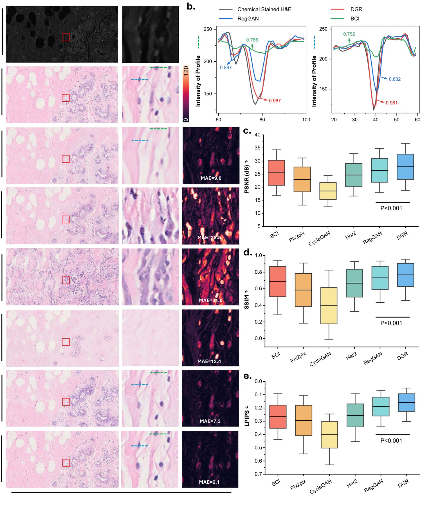
图 2：AF → H\&E 的各方法对比。a 为各方法生成结果与 MAE 热力图；b 为强度剖面与 PCC；c-e 为 LPIPS/SSIM/PSNR 的分布。
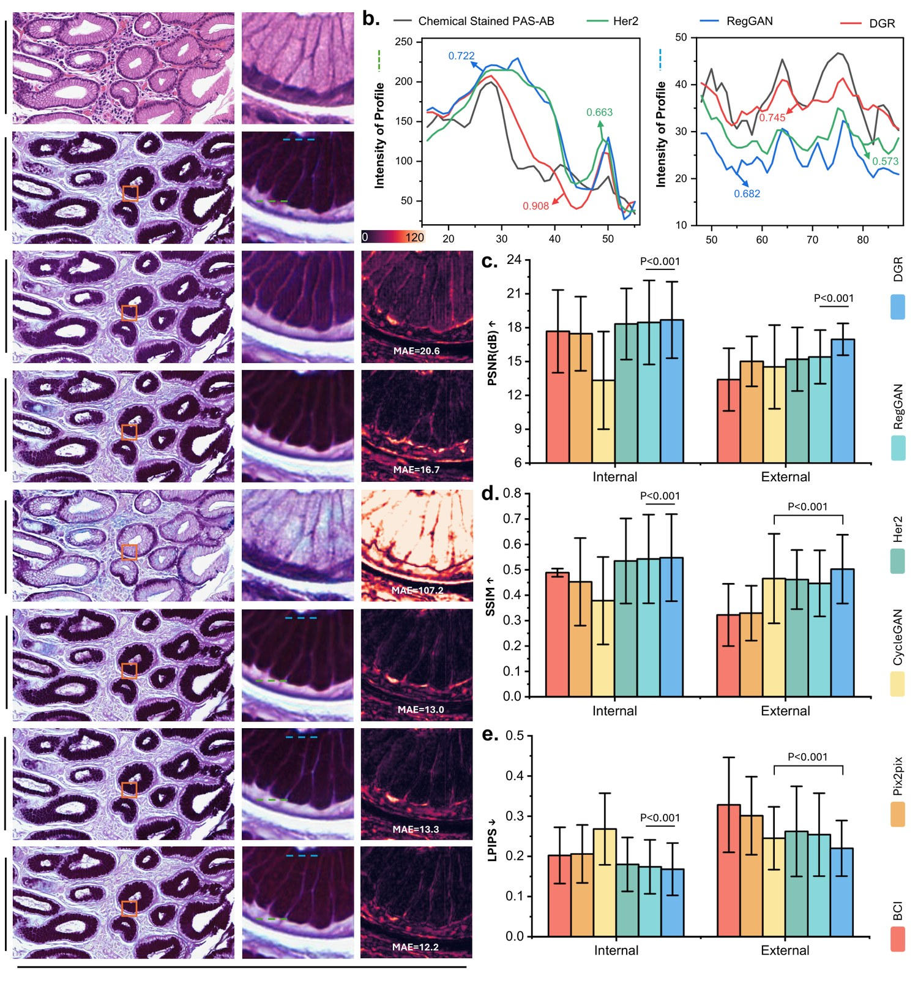
图 3：H\&E → PAS-AB 的结果。注意 c-e 分列了内部与外部测试集。
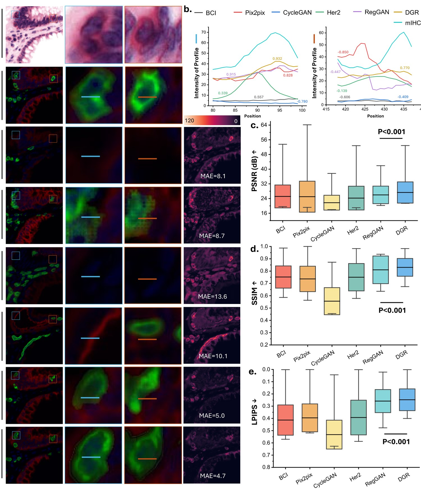
图 4：H\&E → mIHC 的结果。DGR 在 panCK（红通道）与 DAPI（蓝通道）上都更可靠。
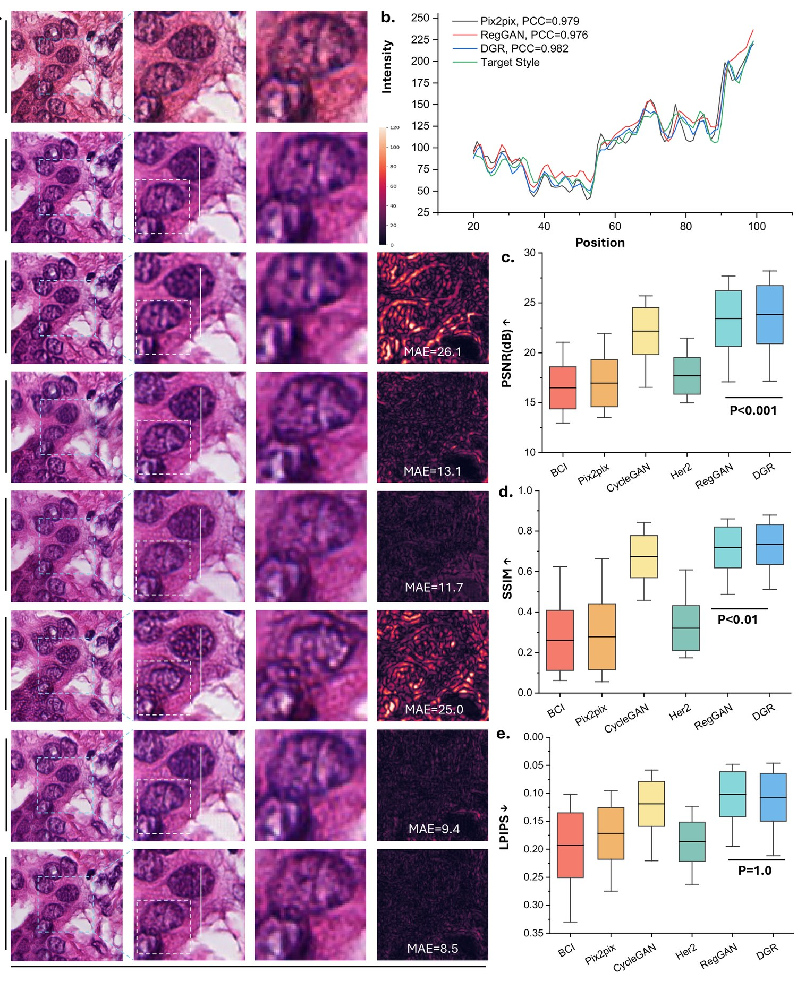
图 5：染色风格归一化的结果，DGR 的 PCC 达到 0.982。
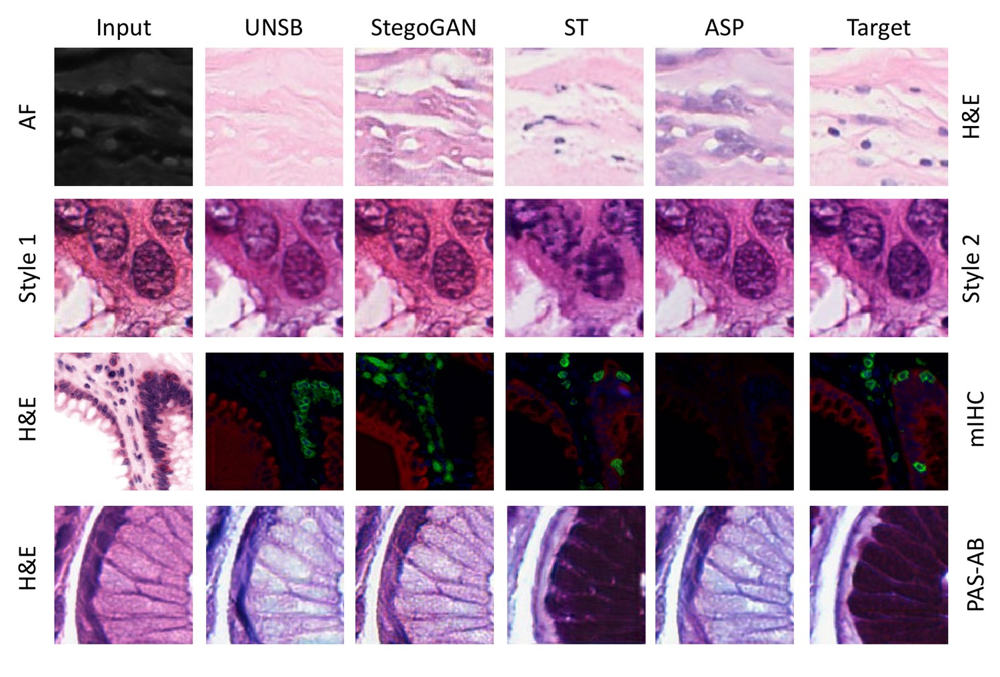
图 A2：四种较弱方法（ASP、UNSB、ST、StegoGAN）在四个数据集上的可视化，可直观看出它们与真值的差距。
5.3 实验类型二：抗错位鲁棒性实验（本文最重要的实验）
这是全文最有分量的实验，专门验证 DGR 的核心主张。
实验设计：
- 准备一个良好对齐的数据集：从 H\&E 与 PAS-AB 的 WSI 中提取 11,918 对 256×256 的配对图块；
- 人为施加 5 档错位（旋转 + 平移 + 缩放）：
| 错位等级 | 旋转 | 平移 | 重缩放 |
|---|---|---|---|
| Level 1 | ±1° | ±2% | ±2% |
| Level 2 | ±2° | ±4% | ±4% |
| Level 3 | ±3° | ±6% | ±6% |
| Level 4 | ±4° | ±8% | ±8% |
| Level 5 | ±5° | ±10% | ±10% |
- 训练时输入与目标图像中心裁剪至 128×128；
- 关键设定：在"错位数据"上训练，在"良好对齐数据"上测试——这才能真正检验模型有没有把错位"内化"掉；
- 三组消融：
- Baseline：Bai 等的模型，不含任何配准组件；
- Baseline + RNR：加入 $R_1$ 配准模块（等价于 RegGAN 的做法）；
- Baseline + DGR：同时含 RNR 与 PcG，实现生成与配准解耦。
实验结果：
| 策略 | Level 1 PSNR | Level 3 PSNR | Level 5 PSNR |
|---|---|---|---|
| Baseline | 17.702 | 15.694 | 14.324 |
| Baseline + RNR | 18.228 | 18.031 | 17.095 |
| Baseline + DGR | 18.414 | 18.460 | 17.730 |
三条结论：
- Baseline 随错位急剧退化（Level 1 → Level 5 掉了 3.4 dB），说明它面对错位数据毫无鲁棒性；
- 加入 RNR 后性能大幅回稳（Level 5 提升到 17.095），说明配准模块确实能缓解错位；
- 再加 PcG 后进一步提升，且在 Level 1 到 Level 4 之间 PSNR 始终超过 18 dB，全程优于前两者。
在最大错位（Level 5，±5° 旋转 + ±10% 平移 + ±10% 缩放）下，DGR 相比基线取得 3.4 dB（23.8%）的 PSNR 提升。
作者还专门强调：这个结果凸显了通过 PcG 模块施加"显式空间一致性约束"的重要性——也就是说，光有配准（RNR）不够，必须再加上"不许动像素"的硬约束（PcG）才能真正解耦。
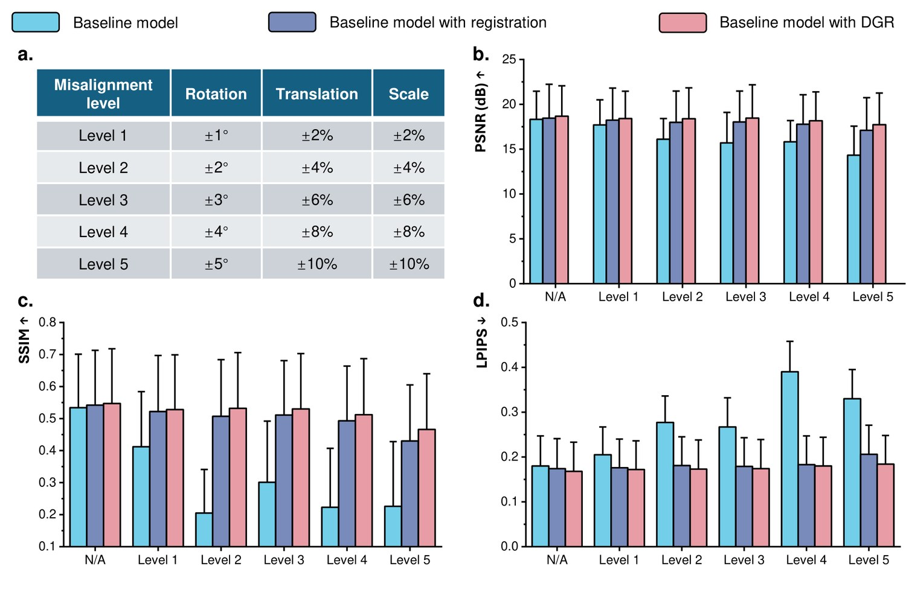
图 6：DGR 的抗错位能力。a 为五档错位设置；b-d 为三组消融在 PSNR/SSIM/LPIPS 上的对比（蓝=Baseline，紫=Baseline+RNR，红=Baseline+DGR）。
5.4 实验类型三：盲法人工评估（临床可信度实验）
实验设计：定量指标再好，也不能说明病理医师分辨不出来。所以作者做了一次盲法测试：
- 随机选取 250 张虚拟染色 H\&E + 250 张化学染色 H\&E（共 500 张），随机打乱；
- 同理再来一组 250 + 250 的 PAS-AB；
- 请资深病理医师判断每张图"是真实的化学染色，还是虚拟染色"。
实验结果：
| 任务 | 判读准确率 | 灵敏度 | 特异度 | Kappa | 卡方检验 P 值 |
|---|---|---|---|---|---|
| H\&E | 52.4% | 57.2% | 47.6% | 0.048 | P = 0.323 |
| PAS-AB | 52.4% | 31.2% | 73.6% | 0.048 | P = 0.277 |
52.4% 基本就是抛硬币的水平，卡方检验 P 值均大于 0.05，说明化学染色与虚拟染色图像之间没有统计学显著差异——病理医师无法可靠区分二者。
这是本文最有冲击力的一个结果：它把"模型指标好"升级成了"临床专家看不出来"。
5.5 实验类型四：细胞结构保真度（下游任务实验）
实验设计：用 Cellpose 做细胞核分割，以化学染色的真值作为参照，计算 Dice 系数（DICE）。DICE 越高，说明虚拟染色图像保留细胞结构的能力越强。
结果（表 A13，平均 DICE）：
| 模型 | DICE |
|---|---|
| CycleGAN | 0.265 |
| ST | 0.270 |
| UNSB | 0.291 |
| ASP | 0.290 |
| StegoGAN | 0.303 |
| Pix2Pix | 0.363 |
| BCI | 0.396 |
| Her2 | 0.397 |
| RegGAN | 0.421 |
| DGR | 0.422 |
DGR 与 RegGAN 基本持平（0.422 vs 0.421），并列最优。这说明 DGR 在提升对齐鲁棒性的同时，并没有牺牲结构保真度。
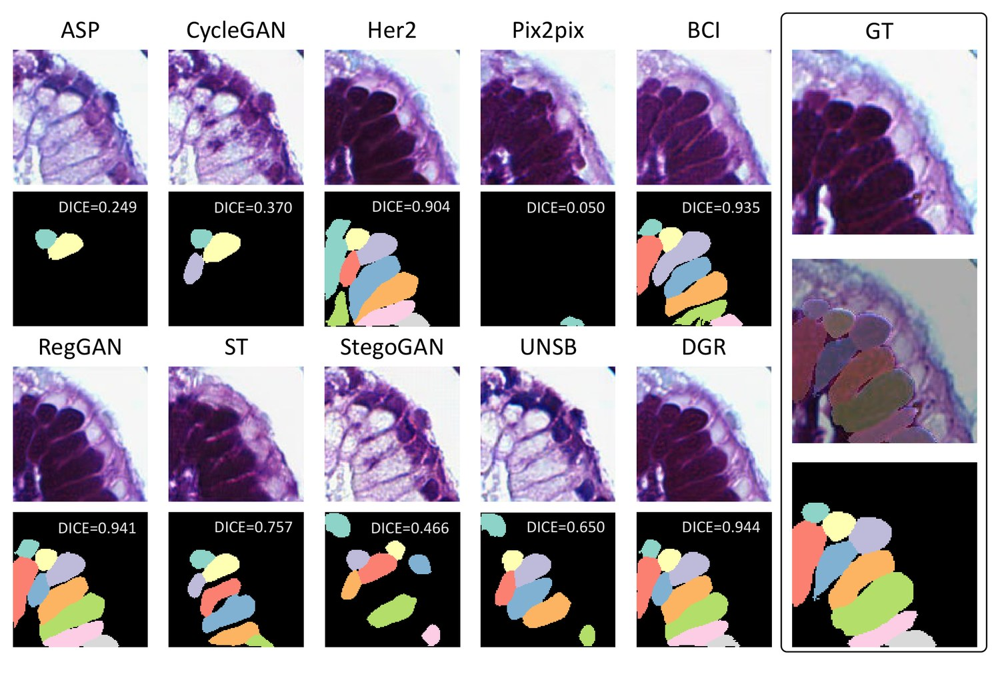
图 A6：Cellpose 细胞分割结果对比，各子图标注了该样本的 DICE 值。
5.6 实验类型五：计算效率（工程可用性实验）
作者用 NVIDIA L20 测了各模型的显存与速度（batch size 1 测显存，batch 32 测推理速度）：
| 模型 | 推理显存 | 推理速度 | 训练显存 | 训练速度 |
|---|---|---|---|---|
| Pix2Pix | 245.94 MB | 0.501 ms | 1051.48 MB | 11.912 ms |
| CycleGAN | 104.73 MB | 4.042 ms | 448.14 MB | 29.926 ms |
| RegGAN | 108.73 MB | 4.040 ms | 448.14 MB | 28.870 ms |
| DGR | 602.78 MB | 9.616 ms | 1441.39 MB | 70.139 ms |
代价是真实的：DGR 因为多了一个配准网络 $R_2$，训练速度约 70 ms/图，比 Pix2Pix（11.9 ms）慢约 6 倍。作者在讨论里也坦诚地把这一点列为局限。
5.7 实验类型六：全切片（WSI）拼接可视化
作者还把虚拟染色图块拼回整张全切片图像（WSI），验证大规模部署时的视觉效果：
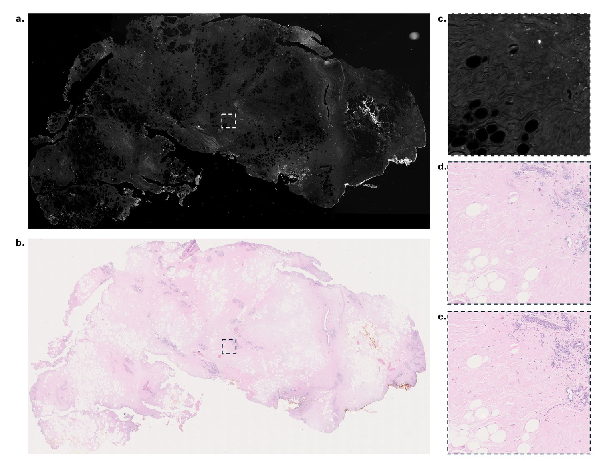
图 A4：AF → H\&E 的全切片可视化。a 为 AF WSI（输入），b 为 H\&E WSI（真值），c 为放大的 AF，d 为由 256 个虚拟染色图块拼接而成的大幅 H\&E，e 为放大的 H\&E 真值。
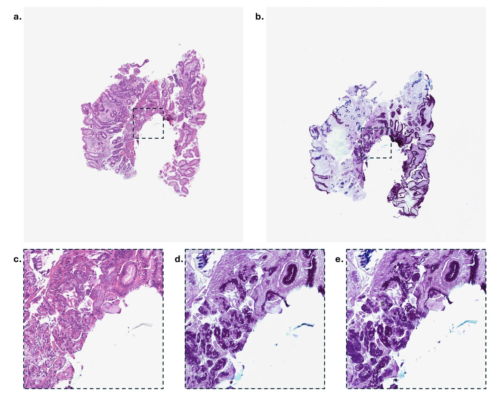
图 A5：H\&E → PAS-AB 的全切片可视化，同样由 256 个虚拟染色图块拼接而成。
6. 讨论、局限与展望
作者在讨论部分坦诚列了两个局限：
- 泛化能力：应用到外部数据集时，所评估方法的泛化能力仍有改进空间（不过 DGR 的外部提升 +10.1% 已是最好）；
- 计算资源：DGR 相比部分基线需要更高的计算资源（多一个配准网络），可能限制其在资源受限场景的部署。
未来方向：
- 构建大规模、多样化的数据集来增强鲁棒性与适应性；
- 优化模型架构以提升效率；
- 引入更先进的生成式 AI 模型——作者明确点名了扩散模型（diffusion model），认为这是推动各类染色虚拟染色流程标准化的一个有前景的方向。
7. 这篇工作最值得记住的三点
① 问题的重新定义。 前人把"错位"当成生成模型的问题来治（多尺度损失、配准校正），本文指出：错位是数据采集的固有限制（化学染色导致形变 + 单张切片无法反复染色），因此正确的做法不是在生成端"硬扛"，而是在损失端把错位显式地消掉，同时把生成器锁死在"不许动像素"上。
② 解耦这个动作本身。 RegGAN 的失败不在于"配准"这个想法错，而在于生成与配准耦合——生成器可以把错位甩锅给配准器。DGR 用"两个对抗过程 + 一个恒等性约束 + 一个跨模态一致性约束"把这层耦合彻底切断。这是本文真正的技术贡献。
③ 论证的漂亮之处。 "$G(x)$ 与 $x$ 的错位不是数据属性，而是训练不到位的伪影"——这一句把生物学的先验（同一张切片、同一套结构）转成了可写进损失函数的数学约束。先有物理论证，再有公式，这个顺序值得学习。
8. 附：公式速查表
| 编号 | 公式 | 作用 |
|---|---|---|
| (1) | $\min_G L=\frac1N\sum\|G(x_n)-y_n\|_1$ | Pix2Pix 基线，对错位敏感 |
| (2) | $\phi_n=R(G(x_n),y_n)$ | RegGAN 估计形变场 |
| (3) | $\min_{G,R}L=\frac1N\sum\|\phi_n\circ G(x_n)-y_n\|_1$ | RegGAN 校正损失（漏洞所在） |
| (4) | $L_{L1}=\frac1N\sum\|R_1(G(x_n),y_n)\circ G(x_n)-y_n\|_1$ | RNR：校正后 $L_1$ 重建损失 |
| (5) | $L_{ssim}=-\frac1N\sum\log(1+\mathrm{ssim}(\cdot,\cdot))$ | RNR：结构相似性损失 |
| (6) | $L_{smooth}=\frac1N\sum\|\nabla R_1(\cdot,\cdot)\|_2$ | RNR：形变场平滑正则 |
| (7) | $L_{adv}=-\frac1N\sum\log D(G(x_n))$ | 生成器对抗损失 |
| (8) | $L_{dis}=-\frac1N\sum[\log(1-D(G(x_n)))+\log D(y_n)]$ | 判别器损失 |
| (9) | $L_{RNR}=\alpha L_{L1}+\beta L_{ssim}+\gamma L_{smooth}+\delta L_{adv}$ | RNR 总损失 |
| (10) | $L_{T1}=\frac1N\sum\|R_2(x_n,G(x_n))\circ G(x_n)-G(x_n)\|_1$ | PcG：恒等性约束（逼 $G(x)$ 与 $x$ 对齐） |
| (11) | $L_{T2}=\frac1N\sum\|R_2(x_n,y_n)\circ G(x_n)-R_1(G(x_n),y_n)\circ G(x_n)\|_1$ | PcG：跨模态一致性（防止 $R_2$ 偷懒） |
| (12)(13) | $L_{T1R},L_{T2R}$ | $R_2$ 形变场平滑正则 |
| (14) | $\min_{G,R_1}L=L_{RNR}+\epsilon L_{T1}$ | 训练第 1 步 |
| (15) | $\min_{R_2}L=L_{T1}+\gamma L_{T1R}+L_{T2}+\gamma L_{T2R}$ | 训练第 2 步 |
超参数：$\alpha=10$，$\beta=0.5$，$\gamma=10$，$\delta=0.1$，$\epsilon=5$；判别器与两个配准网络学习率均为 1e-5；训练 200 epoch。
9. 资源
- 论文：arXiv:2509.14119v1（2025-09-17）
- 代码与权重：<https://github.com/birkhoffkiki/DTR>
- 数据集：
- HEMIT：<https://github.com/BianChang/HEMIT-DATASET>
- A2H（StainNet）：<https://github.com/khtao/StainNet>
- AF2HE：<https://github.com/TABLAB-HKUST/U-Frame（可能需要申请）>
- HE2PAS-AB / HE2PAS-AB-EXT：来自香港威尔斯亲王医院，因隐私原因不公开，需联系通讯作者
- 伦理审批：香港科技大学 HAREC，编号 HREP-2024-0212
本文为论文解读博客，所有图表均截取自原论文（arXiv:2509.14119）。
← 返回研究文章